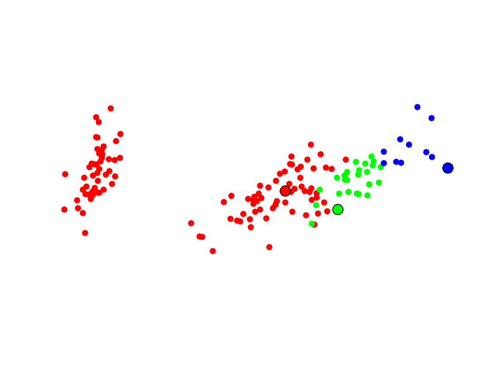
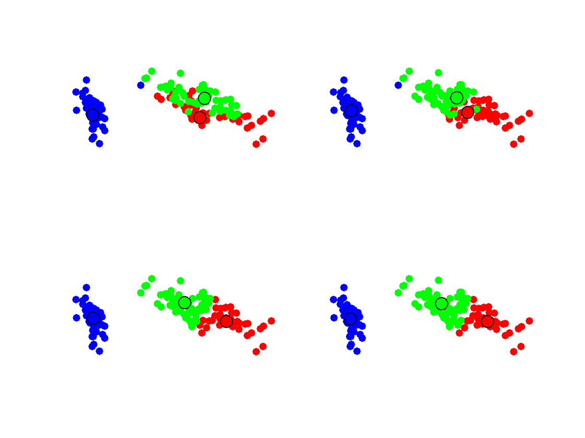
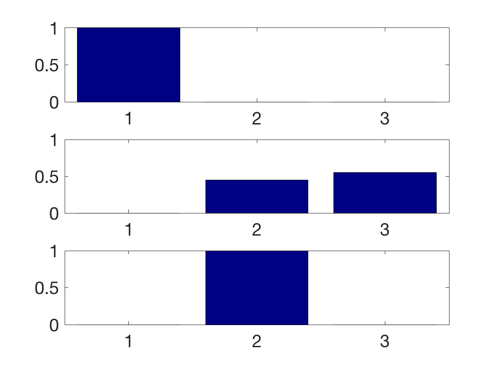

PCA, Nearest-Neighbors Classification and Clustering
This tour details Principal Component Analysis (dimentionality reduction), supervised classification using nearest neighbors and unsupervised clustering using \(k\)-means.
Contents
We recommend that after doing this Numerical Tours, you apply it to your own data, for instance using a dataset from LibSVM.
Disclaimer: these machine learning tours are intended to be overly-simplistic implementations and applications of baseline machine learning methods. For more advanced uses and implementations, we recommend to use a state-of-the-art library, the most well known being Scikit-Learn
Installing toolboxes and setting up the path.
You need to download the following files: general toolbox.
You need to unzip these toolboxes in your working directory, so that you have toolbox_general in your directory.
For Scilab user: you must replace the Matlab comment '%' by its Scilab counterpart '//'.
Recommandation: You should create a text file named for instance numericaltour.sce (in Scilab) or numericaltour.m (in Matlab) to write all the Scilab/Matlab command you want to execute. Then, simply run exec('numericaltour.sce'); (in Scilab) or numericaltour; (in Matlab) to run the commands.
Execute this line only if you are using Matlab.
getd = @(p)path(p,path); % scilab users must *not* execute this
Then you can add the toolboxes to the path.
getd('toolbox_general/');
Dataset Loading
We use here the famous IRIS dataset of Fisher. The data set consists of 50 samples from each of three species of Iris (Iris setosa, Iris virginica and Iris versicolor). Four features were measured from each sample: the length and the width of the sepals and petals, in centimetres.
Helpers.
SetAR = @(ar)set(gca, 'PlotBoxAspectRatio', [1 ar 1], 'FontSize', 20);
Load the dataset.
name = 'digits'; name = 'iris'; load(['ml-' name]);
Randomly permute it.
A = A(randperm(size(A,1)),:);
Separate the features \( (x_i)_{i=1}^p \)from the class information. The feature are stored as the row of a matrix \(X \in \RR^{p \times n}\) Be sure to start the class at index 1.
X = A(:,1:end-1); y = A(:,end); y = y-min(y)+1;
\(p\) is the number of samples, \(n\) is the dimensionality of the features, \(k\) is the number of classes.
[p,n] = size(X); k = max(y);
Dimenionality Reduction and PCA
In order to display in 2-D or 3-D the data, dimensionality reduction is needed. The simplest method is the Principal Component Analysis (PCA), which perform an orthogonal linear projection on the principal axsis (eigenvector) of the covariance matrix.
Compute empirical mean \[ m = \frac{1}{p} \sum_{i=1}^n \in \RR^n \] and covariance \[ C = \frac{1}{p} \sum_{i=1}^n (x_i-m) (x_i-m)^\top ?\in \RR^{n \times n}. \] Denoting \(\tilde X = X - 1_p m^\top \), one has \(C=\tilde X^\top \tilde X\).
Xm = @(X)X-repmat(mean(X,1), [size(X,1) 1]); Cov = @(X)Xm(X)'*Xm(X);
Display the covariance matrix.
clf;
imagesc(Cov(X));
colormap jet(256);

Compute PCA ortho-basis using the SVD decomposition \[ \tilde X = U \diag(d) V \] where \(U \in \RR^{p \times n}\) and \(V \in \RR^{n \times n}\) have orthonormal columns. \(V\) are the principal directions of variance and are order by decreasing variances.
[U,D,V] = svd(Xm(X),'econ');
Compute the feature in the PCA basis, \(z_i=V^\top (x_i-m) \), stored in matrix format as \(Z=\tilde X V\).
Z = Xm(X) * V;
Plot the singular values of the covariances, which corresponds to the standard deviation of the data along the principal directions.
clf; plot(diag(D), '.-', 'LineWidth', 2, 'MarkerSize', 30); axis tight; SetAR(1/2);

The first dimensions of the \(z_i\) are the optimal way to linearly embed the data in a low dimensional space. This can be used for display in 2-D using the first two dimension.
col = [ [1 0 0]; [0 1 0]; [0 0 1]; [0 0 0]; [0 1 1]; [1 0 1]; [1 1 0]; ... [1 .5 .5]; [.5 1 .5]; [.5 .5 1] ]'; ms = 25; clf; hold on; lgd = {}; for i=1:min(k,size(col,2)) I = find(y==i); plot(Z(I,1), Z(I,2), '.', 'Color', col(:,i), 'MarkerSize', ms); lgd{end+1} = num2str(i); end axis tight; axis equal; box on; legend(lgd, 'Location', 'EastOutside'); SetAR(1);

Similar display in 3-D.
clf; hold on; for i=1:k I = find(y==i); plot3(Z(I,1), Z(I,2), Z(I,3), '.', 'Color', col(:,i), 'MarkerSize', ms); end view(3); axis tight; axis equal; box on; legend(lgd, 'Location', 'EastOutside'); SetAR(1);

Supervised Learning: Nearest Neighbor Classification
Probably the simplest method for supervised classification is Nearest Neighbor (\(R\)-NN), where \(R\) is a parameter indexing the number of neighbor. Increasing \(R\) is important to cope with noise and obtain smoother decision boundary, and hence better generalization performance.
The class predicted for a point \(x\) is the one which is the most represented among the \(R\) points \((x_i)_i\) which are the closed to \(x\).
Split into training and testing.
p0 = round(.5*p); p1 = p-p0; X0 = X(1:p0,:); y0 = y(1:p0); X1 = X(p0+1:end,:); y1 = y(p0+1:end);
Macro to compute pairwise squared Euclidean distance matrix.
distmat = @(X,Z)bsxfun(@plus,dot(X',X',1)',dot(Z',Z',1))-2*(X*Z');
Compute Euclidean distance between some \(x\) and all other \(x_{1,j}\) in the training set.
i = 1; x = X1(i,:); % could be any point
D = distmat(X0,x);
Sort the distance and generate the list of sorted classes \( y_\sigma = (y_{\si(i)})_i\). This generate an indexing \(\si\) (a permutation of \(\{1,\ldots,p\}\)) such that \[ \norm{x-x_{\si(1)}} \leq \norm{x-x_{\si(2)}} \leq \ldots \leq \norm{x-x_{\si(p)}}. \]
[~,I] = sort(D); ys = y(I);
For a given \(R\), one can compute the histogram of class apparition \[ h_\ell \eqdef \frac{1}{R} \enscond{ i }{ \si(i) \in \{1,\ldots,R\} } = \sharp \si^{-1}( \{1,\ldots,R\} ). \] The decision class for \(x\) is then the maximum of the histogram \[ c(x) \eqdef \uargmax{\ell} h_\ell \]
R = 5;
h = hist(ys(1:R,:), 1:k) / R;
[~,c] = max(h);
fprintf('c(x)=%d [true class=%d]\n', c, y1(i));
c(x)=3 [true class=3]
Display the histigram \((h_\ell)_\ell\) of reparttion of class indexes as \(R\) grows.
Rlist = round([.05 .1 .5 1]*p0); % [5 50 100] clf; for i=1:length(Rlist) R = Rlist(i); h = hist(ys(1:R,:), 1:k)/R; subplot(length(Rlist),1,i); bar(1:k,h); axis([0.5 k+.5 0 1]); set(gca, 'FontSize', 15); end

Exercice 1: (check the solution) Perform the NN classification for all the points in the test set, and for varying \(R\). Show how the classification score \(S\) (number of correctly classified points) evolves with \(R\)
exo1;

Exercice 2: (check the solution) Display, as a function of the position in 2-D PCA space, the class output by the \(R\)-NN method when applied in 2-D.
exo2;

Unsupervised Learning: \(k\)-means
In an un-supervised setting, the class information \(y\) is not available. The basic problem is then to recover class information from the knowledge of \(x\) only. This corresponds to the clustering problem.
Select a subset of classes
if k>=4 ksvg = k; Xsvg = X; ysvg = y; k = 3; I = find(y<=k); X = X(I,:); y = y(I); p = length(I); end % PCA [U,D,V] = svd(Xm(X),'econ'); Z = Xm(X) * V;
The most basic algorithm is the \(k\)-means, which tries to recover the class index \(\bar y_i=\ell\) from the distance \( \norm{x_i-c_\ell} \) between the feature point \(x_i\) and the class centroid \(c_\ell\) (which are the unknown of the problem).
It does so by minimizing the following non-convex energy \[ \umin{ (c_\ell)_\ell } \sum_i \umin{\ell} \norm{x_i-c_\ell}^2 \]
We first initialize the class centroids \( (c_\ell)_\ell \) at random among the points. They are stored in as the row of a matrix \( C \in \RR^{k \times n} \).
I = randperm(p); I = I(1:k); C = X(I,:);
The \(k\)-means algorithm iterate between first determining the class of each point using the distance to the centroids \[ \forall i \in \{1,\ldots,p\}, \quad \bar y_i \leftarrow \uargmin{\ell} \norm{x_i-c_\ell}. \]
D = distmat(X,C); [~,yb] = min(D, [], 2);
Display the centroids and the classes using colors. This correspodns to a Voronoi diagram segmentation in the high dimensional space, but here the display is done in 2D.
clf; hold on; for i=1:k I = find(yb==i); plot(Z(I,1), Z(I,2), '.', 'Color', col(:,i), 'MarkerSize', 25); end CV = (C-repmat(mean(X,1), [k 1]))*V; for i=1:k plot(CV(i,1), CV(i,2), 'o', 'MarkerFaceColor', col(:,i), 'MarkerSize', 12, 'MarkerEdgeColor', 'k'); end axis tight; axis equal; axis off; SetAR(1);
The second step of the \(k\)-means algorithm is to update the centroids position to be the mean of the points inside each class \[ \forall \ell \in \{1,\ldots,k\}, \quad c_\ell \leftarrow \frac{ \sum_{i:y_i=\ell} x_i }{ \sharp \{i:y_i=\ell\} }. \]
for l=1:k C(l,:) = mean( X(yb==l,:), 1 ); end
Exercice 3: (check the solution) Peform several step of the \(k\)-means algorithm.
exo3;
Display the histogram of (true, i.e. according to \(y\)) class inside each estimated class (i.e. according to \(\bar y\)).
clf for l=1:k I = find(yb==l); h = hist(y(I),1:k); h = h/sum(h); subplot(k,1,l); bar(1:k,h); axis([0.5 k+.5 0 1]); set(gca, 'FontSize', 20); end
Exercice 4: (check the solution) Implement better initialization strategies such as farthest point sampling or \(k\)-means++.
exo4;